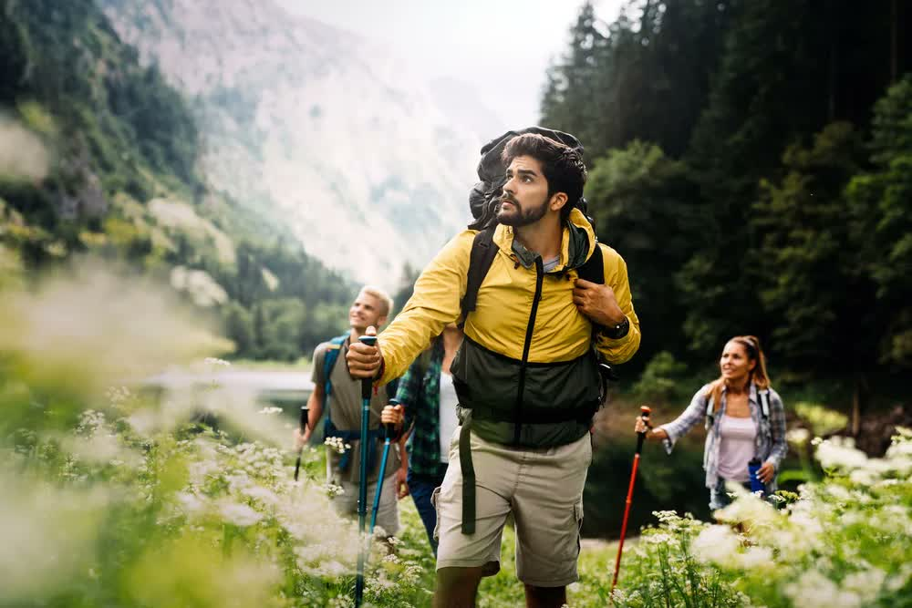

Our Story
Pacific Trails Resort has been welcoming guests to the California North Coast since 2005. We wanted to create a place where people could enjoy the beauty of the coast without giving up modern comforts. Our yurts sit on the bluffs overlooking the Pacific, so you can fall asleep to the sound of waves and wake up to ocean views.
Every morning we serve a cooked-to-order breakfast in our lodge, and in the evening we offer complimentary appetizers and beverages. Whether you are looking for adventure on the trails or just want to relax by the pool, Pacific Trails has something for everyone.


Meet Our Team
Our team is what makes Pacific Trails special. Sarah Mitchell runs the day-to-day operations, and David Chen handles guest services. Most of our staff have lived in this area for years, so we know the best trails, the hidden beaches, and how to make your stay comfortable.
Whether you want a guided hike or just some quiet time by the ocean, we are here to help. Come by the lodge anytime and we will be happy to show you around or just chat about the area.
Sustainability
We care about the environment. We use solar panels, recycle, and work with local groups to keep the coast clean.
Prime Location
We are right on the coast with easy access to state parks and miles of hiking trails.
Genuine Hospitality
We treat every guest like family. Let us know what you need and we will do our best to help.
12010 Pacific Trails Road
Zephyr, CA 95555
888-555-5555